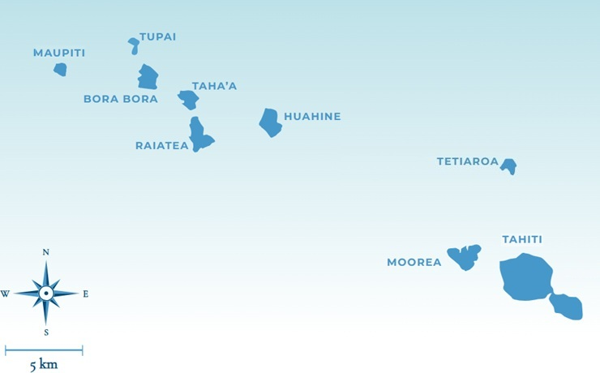

Voyage de noces Polynésie française
12 — 27 juin 2026
Notre itinéraire
16 jours au bout du monde
De Moorea à Tahiti, notre carnet de voyage jour après jour.
Archipel de la Société

12 — 27 juin 2026
Notre itinéraire
De Moorea à Tahiti, notre carnet de voyage jour après jour.
